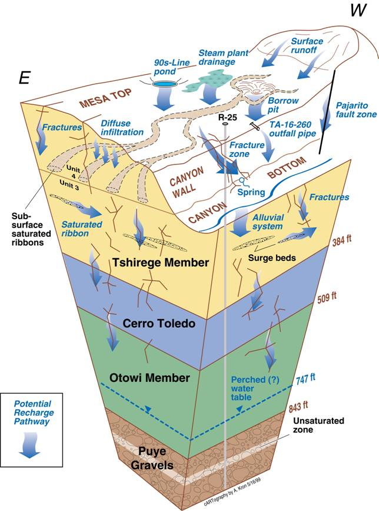

|
Velimir V Vesselinov (monty) Computation Earth Sciences Group (EES-16) Earth & Environmental Sciences Division (EES) Los Alamos National Laboratory (LANL) Mail Stop T003 Los Alamos, NM 87545 Tel: (505) 665-1458 Cell: (505) 412-7159 Email: v v v Web: ees.lanl.gov/monty - github - github2 |
 |

PhD, 2000
Department of Hydrology and Water Resources, University of Arizona, Tucson, Arizona, USA
Major: Hydrology
Minor: Applied Mathematics
Dissertation title: Numerical inverse interpretation of pneumatic tests in unsaturated fractured tuffs at the Apache Leap Research Site
Advisor: Regents Professor Dr. Shlomo P. Neuman
MEng, 1989
Department of Hydrogeology and Engineering Geology, University of Mining and Geology, Sofia, Bulgaria
Major: Hydrogeology
Minor: Engineering Geology
Dissertation title: Hydrogeological investigation in applying the Vyredox method for groundwater decontamination
Advisor: Professor Dr. Pavel P. Pentchev
DiaMonD is a project funded by the U.S. Department of Energy Office of Science.
DiaMonD addresses Mathematics at the Interfaces of Data, Models, and Decisions.
DiaMonD involves researchers from Colorado State University, Florida State University, Los Alamos National Laboratory, Massachusetts Institute of Technology, Oak Ridge National Laboratory, University of Texas at Austin, and Stanford University.
DiaMonD web site.
Los Alamos National Laboratory (LANL) is a complex site for environmental management. The site encompasses about 100 km2 (37 square miles) of terrain with 600 m (2,000 feet) of elevation change, and an average rainfall of less than 300-400 mm (12 to 16 inches) per year. The site is intersected by 14 major canyon systems. Ecosystems within the site range from riparian to high desert and boast over 2,000 archaeological sites, as well as endangered species habitats. The surface and subsurface water flow discharges primarily along the Rio Grande to the east of LANL. The Rio Grande traverses the Española basin from north to south; several major municipalities use the river water downgradient from LANL for water supply (Santa Fe, Albuquerque, El Paso/Juarez).

The regional aquifer beneath LANL is a complex hydrogeological system. The regional aquifer extends throughout the Española basin, and is an important source for municipal water supply for Santa Fe, Los Alamos, Española, LANL, and several Native-American Pueblos. The wells providing groundwater from this aquifer for Los Alamos and LANL are located within the LANL site and in close proximity to existing contamination sites. The regional aquifer is comprised of sediments and lavas with heterogeneous flow and transport properties. The general shape of the regional water table is predominantly controlled by the areas of regional recharge to the west (the flanks of the Sierra de los Valles and the Pajarito fault zone) and discharge to the east (the Rio Grande and the White Rock Canyon Springs). At more local scales, the structure of groundwater flow is also influenced by (1) local infiltration zones (e.g., beneath wet canyons); (2) heterogeneity and anisotropy in the aquifer properties; and (3) discharge zones (municipal water-supply wells and springs). The aquifer is also characterized by well-defined, vertical stratification which, in general, provides sufficient protection of the deep groundwater resources.
The vadose zone, between the ground surface and the top of the regional aquifer, is about 180-300 m (600-1000 ft) thick. The vadose zone is comprised of sediments and lavas with heterogeneous flow and transport properties. The variably-saturated flow and transport through the thick vadose zone occurs through pores and fractures, and is predominantly vertical with lateral deviations along perching zones. The groundwater velocities in the vadose zone are high beneath wet canyons (up to 1 m/a) and low beneath the mesas (1 mm/a). Due to complexities in local hydrogeologic conditions, the hydraulic separation between the regional aquifer and the vadose zone is difficult to identify at some localities, especially where mountain-front recharge is pronounced.
The complexity and size of the LANL site make environmental management a continuing engineering and scientific challenge. Legacy contamination—both chemical and radioactive—exists at many locations. Some of the oldest worldwide radioactive Material Disposal Areas (MDA’s), where waste is buried in pits and shafts, are located on the site. LANL is mandated to follow timetables and requirements specified by the Compliance Order on Consent from the New Mexico Environment Department (NMED) for investigation, monitoring, and remediation of hazardous constituents and contaminated sites. Currently, all the remediation activities are scheduled for completion in 2015. LANL is taking actions to prevent potential contaminant effects on human health and the environment.

The environmental work performed at the LANL site is managed by the Environmental Programs (EP) Directorate. A team of external and LANL (Computational Earth Sciences Group, Earth & Environmental Sciences) researchers is tasked by the EP Directorate to provide modeling and decision support to enable scientifically-defensible mitigation of the risks associated with various LANL sites. The principal investigator of this team is Velimir Vesselinov.
Since the 1950's, the LANL site has been the subject of intensive studies for characterization of the site conditions, including regional geology and hydrogeology. Various types of research have been performed at the site related to contaminant transport in the environment which include (1) laboratory experiments, (2) field tests, and (3) conceptual and numerical model analyses. The work is presented in a series of technical reports and peer-reviewed publications.
Currently, important aspects of the environmental management at the LANL site include:
A chromium plume has been identified in the regional aquifer beneath the LANL site. Our team has been tasked with providing modeling decision support to the Environmental Programs (EP) Directorate to enable scientifically-defensible mitigation of the risks associated with chromium migration in the environment. Large amount of data and information are available related to the chromium site (vadose-zone moisture content, aquifer water levels, contaminant concentrations, geologic observations, drilling logs, etc.); they are used to develop and refine conceptual and numerical models of the contaminant transport in the environment. The development of numerical models and performance of model analyses (model calibration, sensitivity analyses, parameter estimations, uncertainty quantification, source identification, data-worth analyses, monitoring-network design, etc.) is a computationally intensive effort due to large model domains, large numbers of computational nodes, complex flow media (porous and fracture flow), and long model-execution times. Due to complexities in the model-parameter space, most of the model analyses require a substantial number of model executions. To improve computational effectiveness, our team utilizes state-of-the-art parallel computational resources and novel theoretical and computational methods for model calibration, uncertainty analysis, risk assessment and decision support.
Numerical modeling of flow and transport in the regional aquifer near Sandia Canyon
The numerical model is capturing current conceptual understanding and calibrated against existing data (taking into account uncertainties)
Regardless of existing uncertainties, the model provide information related to:

Conceptual model of flow at the TA-16 siteA consortium of multiple national laboratories is developing high performance computer modeling capabilities to meet the challenge of waste disposal and cleanup left over from the creation of the US nuclear stockpile decades ago. The project is funded by the Department of EnergyOffice for Environmental Management (DOE-EM).
Within ASCEM, the goal of the "Decision Support" task is to create a computational framework that facilitates the decision making by site-application users, modelers, stakeholders, and decision/policy makers. The decision-support framework leverages on existing and novel theoretical methods and computational techniques to meet the general decision-making needs of DOE-EM as well as the particular site-specific needs of individual environmental management sites.
The decision-support framework can be applied to identify what kind of model analyses should be performed to mitigate the risk at a given environmental management site, and, if needed, support the design of data-acquisition campaigns, field experiments, monitoring networks, and remedial systems. Depending on the problem, decision-support framework utilizes various types of model analyses such as parameter estimation, sensitivity analysis, uncertainty quantification, risk assessment, experimental design, cost estimation, data-worth (value of information) analysis, etc.
MADS (Model Analysis & Decision Support) MADS is an integrated open-source high-performance computational (HPC) framework.
MADS can execute a wide range of data- and model-based analyses:
MADS has been tested to perform HPC simulations on a wide-range multi-processor clusters and parallel environments (Moab, Slurm, etc.).
MADS utilizes adaptive rules and techniques which allows the analyses to be performed with a minimum user input.
MADS provides a series of alternative algorithms to execute each type of data- and model-based analyses.
MADS can be externally coupled with any existing simulator through integrated modules that generate input files required by the simulator and parse output files generated by the simulator using a set of template and instruction files.
MADS also provides internally coupling with a series of built-in analytical simulators of groundwater flow and contaminant transport in aquifers.
MADS has been successfully applied to perform various model analyses related to environmental management of contamination sites. Examples include solutions of source identification problems, quantification of uncertainty, model calibration, and optimization of monitoring networks.
MADS current stable version has been actively updated.
Professional softwares/codes with somewhat similar but not equivalent capabilities are:
MADS source code, example input/output files, and a manual are available at MADS website.
LA-CC-10-055, LA-CC-11-035
WELLS is a C code simulating drawdowns caused by multiple pumping/injecting wells using analytical solutions.
WELLS can represent pumping in confined, unconfined, and leaky aquifers.
WELLS applies the principle of superposition to account for transients in the pumping regime and multiple sources (pumping wells).
WELLS can apply a temporal trend of water-level change to account for non-pumping influences (e.g. recharge trend).
WELLS can account early time behavior by using exponential functions (transmissivities and storativities; Harp and Vesselinov, 2013).
WELLS analytical solutions include:
WELLS has been applied to decompose transient water-supply pumping influences in observed water levels at the LANL site (Harp and Vesselinov, 2010a). For example, the figure below shows simulated drawdowns caused by pumping of PM-2, PM-3, PM-4 and PM-5 on water levels observed at R-15.

Codes with similar capabilities are AquiferTest Pro, AquiferWin32, Aqtesolv, MLU, and WTAQ.
The source code, example input/output files, and a manual are available at WELLS website.
LA-CC-10-019, LA-CC-11-098
MPEST is a LANL-develeoped parallel version of the code PEST (Doherty 2009).
MPEST has been developed to optimize the solving of parallel optimization problems at the LANL multi-processor clusters.
MPEST has been applied in many parallel computing projects worldwide.
MPEST parallelization framework is using the code MPRUN, a code that has been also developed at LANL.
MPRUN is using POSIX threads to fork individual model runs to processors; this approach has been demonstrated to be very effective and superior to using MPI calls in terms of computational performance.
MPEST/MPRUN parallel subroutines are currently imported and further developed in the code MADS. The source code, example input/output files, and a manual are available at MADS website.